Projet de Recherche (C++ / OpenGL)
Ce projet de recherche vise à simuler l'évolution géologique d'un terrain en temps réel[cite: 1047]. L'objectif était de modéliser mathématiquement l'action de l'eau et de la gravité sur la croûte terrestre (paradigme Eulérien), tout en maintenant une fréquence d'exécution interactive dépassant les 900 images par seconde grâce à l'architecture massivement parallèle des processeurs graphiques[cite: 1104, 1107].
Démonstration en temps réel de l'écoulement des fluides et de l'altération du terrain.
Résoudre les équations de Navier-Stokes en 3D est computationnellement trop lourd pour du temps réel[cite: 1181, 1185]. Nous avons donc opté pour une réduction en 2.5D en utilisant les Shallow Water Equations (SWE), qui modélisent la conservation de la masse et de la quantité de mouvement[cite: 1191, 1195].
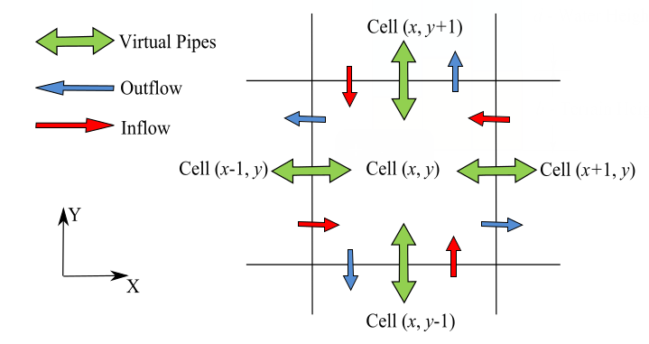
Représentation conceptuelle du modèle des tuyaux virtuels gérant les échanges bidimensionnels[cite: 1072].
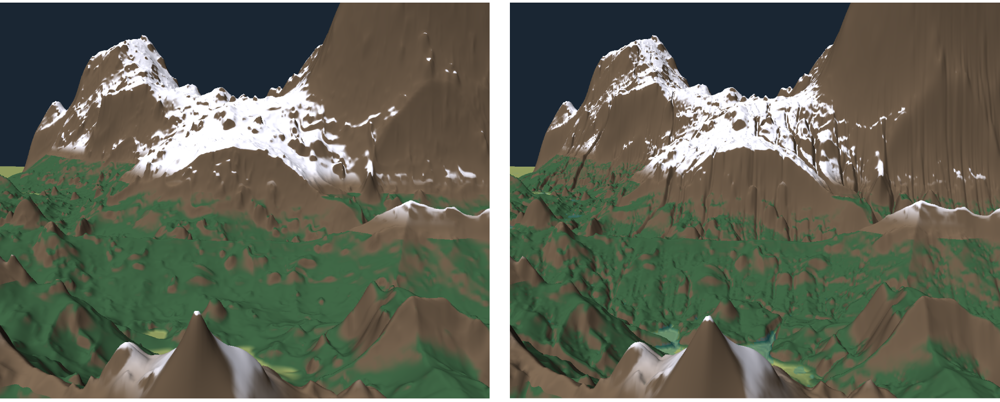
Comparaison entre un relief brut (bruit procédural) et sa restructuration organique par la simulation[cite: 1064].
Pour traiter l'évolution de plus d'un million de cellules simultanément (grille de 1024x1024), l'algorithme a été intégralement déporté sur le GPU via les Compute Shaders d'OpenGL[cite: 1271, 1278]. Les variables physiques (hauteur d'eau, substrat, sédiments) sont stockées dans des textures en virgule flottante 32-bits (GL_R32F) pour éviter les erreurs d'arrondi[cite: 1285, 1286].
glMemoryBarrier) sont injectées entre chaque passe fonctionnelle du shader pour forcer le processeur graphique à purger ses caches avant de continuer[cite: 1328, 1329].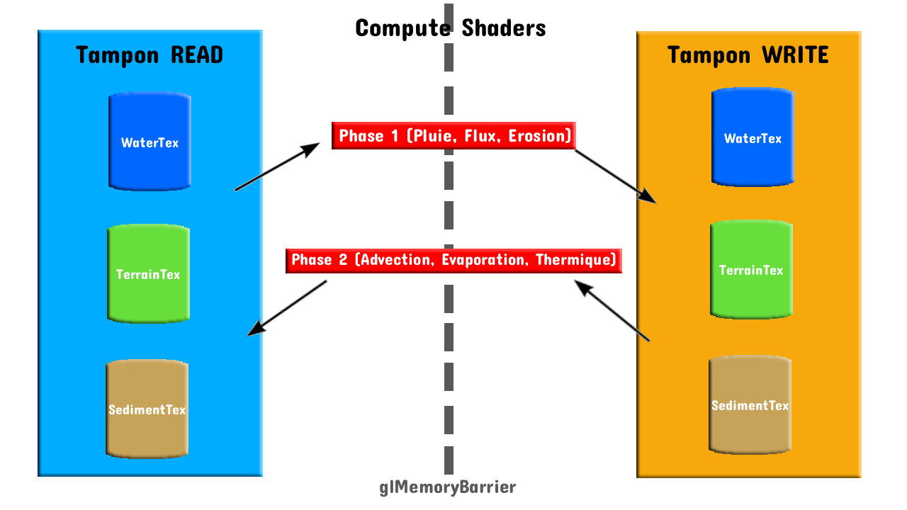
Architecture de synchronisation en mémoire vidéo. L'état validé demeure en lecture seule sous la synchronisation stricte des barrières mémoire[cite: 1344].
Le modèle hydraulique isolé générant des falaises verticales instables, nous y avons couplé un solveur d'érosion thermique[cite: 1356, 1357].
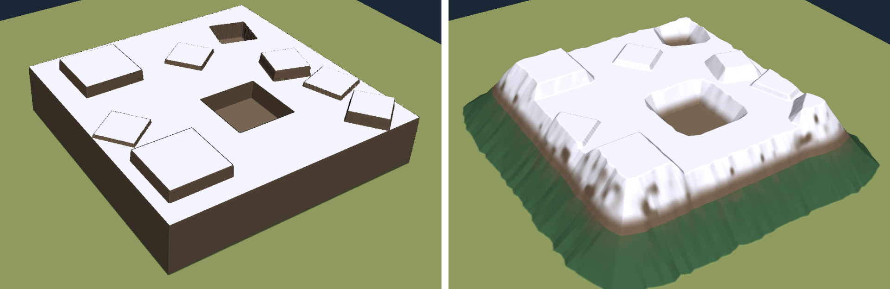
Formation de cônes d'éboulis naturels après l'effondrement gravitationnel[cite: 1089].
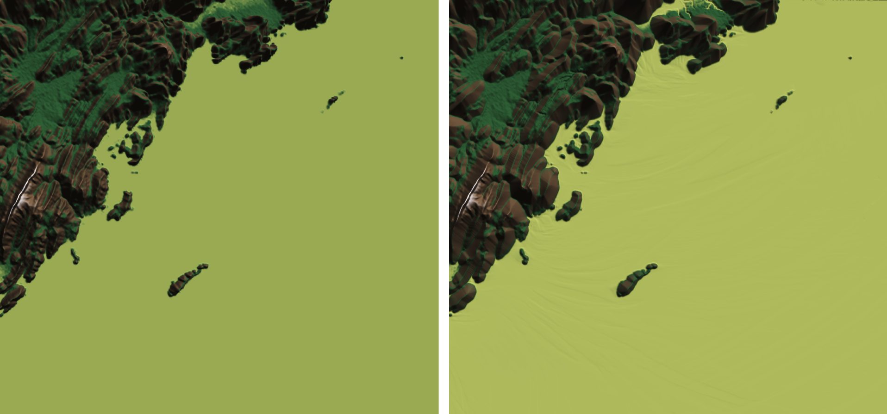
Lignes de courant formées au fond de l'eau grâce à la modélisation des impacts hydrodynamiques[cite: 1079].
La visualisation topographique est découplée de la simulation physique. Le rendu utilise le Vertex Displacement : le Vertex Shader accède à la texture de hauteur (VRAM) et déforme un maillage plan à la volée[cite: 1260, 1264].
Les normales de surface sont calculées dynamiquement dans le Fragment Shader via la fonction d'échantillonnage texelFetch, évitant le coût d'écriture d'une texture de normales dédiée[cite: 1265, 1266].
L'implémentation initiale sur CPU nécessitait environ 1722 ms par cycle (soit ~0.58 FPS). Le portage complet de notre architecture sur les Compute Shaders a permis de ramener ce temps de cycle à 1.0 ms, autorisant une exécution fluide à plus de 960 FPS en temps réel[cite: 1395, 1396, 1397].
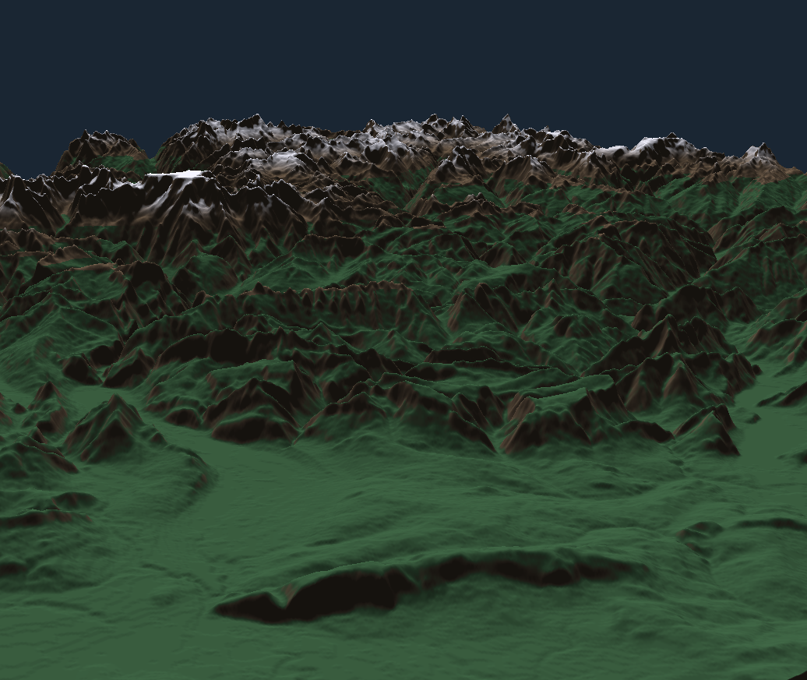
(a) Terrain de base (Alpes)
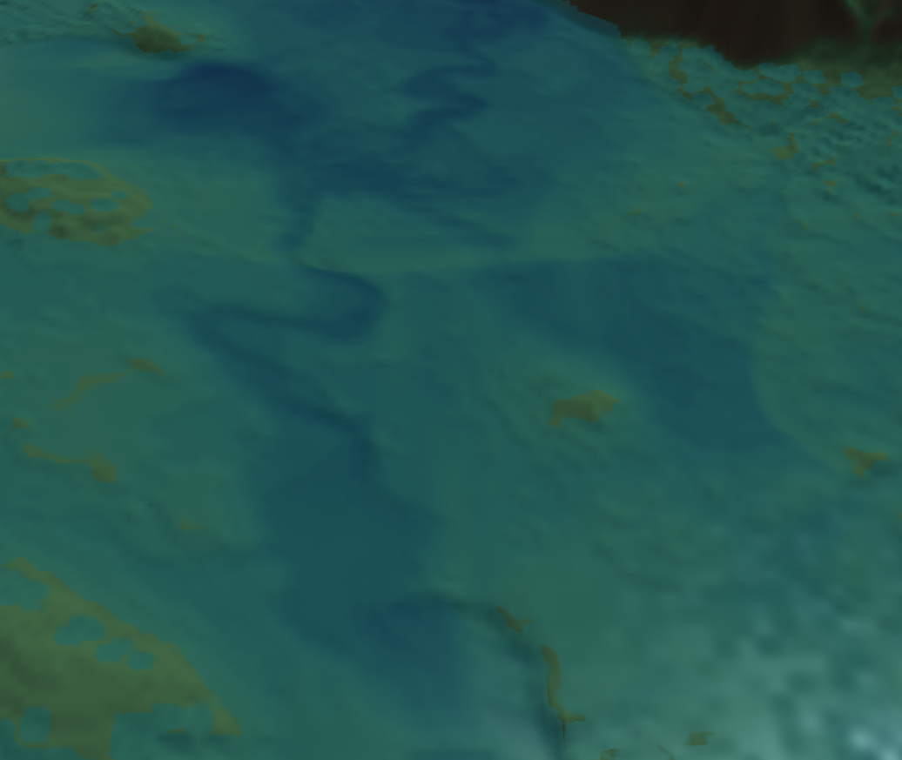
(b) Lignes de courant
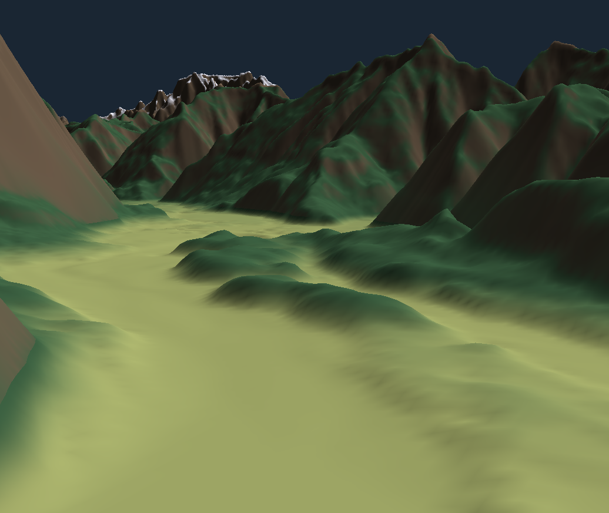
(c) Deltas et berges
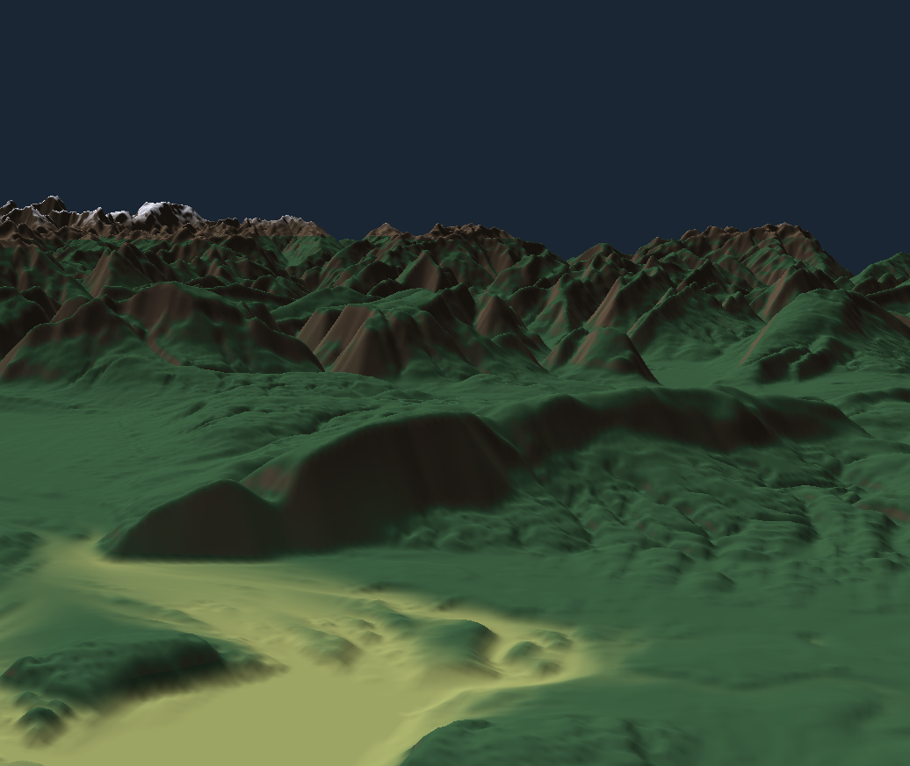
(d) Détails d'érosion
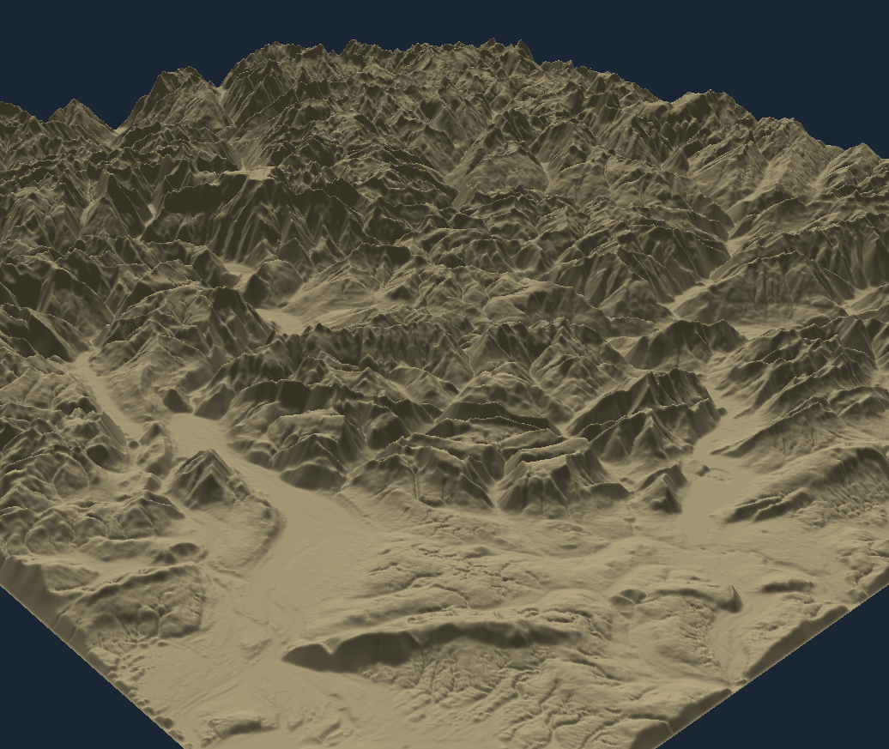
(e) Vue non texturée (scientifique)
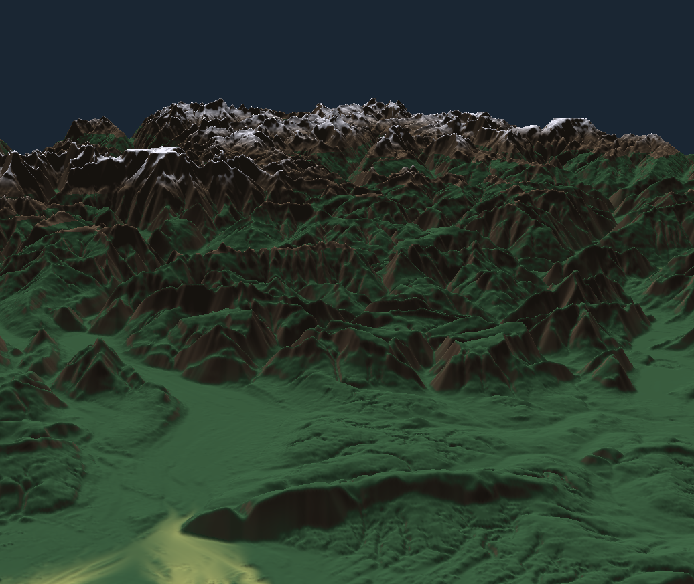
(f) Résultat après simulation